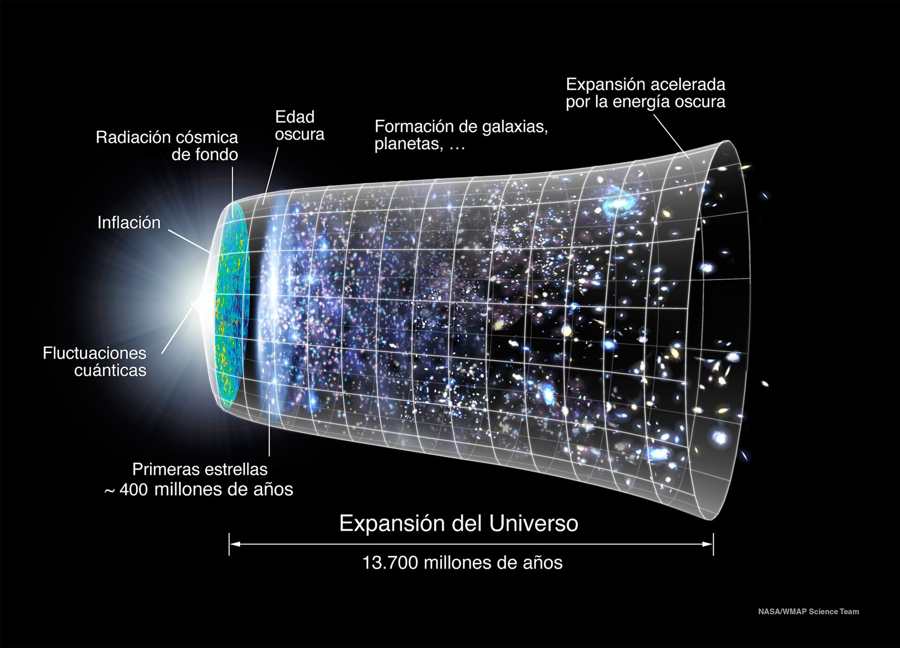

Desde tiempos inmemoriales hemos tratado de entender lo que existe fuera de este planeta… Así empezaría Copérnico, pero yo soy Elena, o como les gusta llamarme, Elenasa, soy muy fan de temas como las coincidencias matemáticas, en especial, siento cierta debilidad por un tema algo abstracto de entender para los mortales, como el radio de Schwarzschild, así que en este artículo veremos cómo desmembrar la física detrás de estos misterios no es tan complicada si sabes cómo.

La barrera de escape: El límite de la luz
Para poder entender de manera sistemática el funcionamiento de las cosas en el universo observable, hemos de retomar la física básica, que no es más, que mera intuición de variables y constantes, en otras palabras, el universo nos lo dice todo, solo hemos de mirar con más detenimiento, comencemos por plantear la hipótesis que ya formularon (…) y nos dejaron este maravilloso legado que explorar…
Partimos de la idea básica primaria de saber que todo el universo se rige por el movimiento, ese movimiento está descrito por una fórmula física, para llegar hasta ella analicemos las variables, para que algo se mueva necesita energía, bien, pues esa energía del movimiento, es lo que se conoce como energía cinética, que no es más, que el trabajo neto (\(W\)) realizado sobre el objeto para llevarlo a una velocidad. Vamos a verlo con integrales: El trabajo es la integral de la fuerza a lo largo de una trayectoria:
Sustituyendo la fuerza por m por a y recordando que la aceleración es la derivada de la velocidad respecto del tiempo:
Nos queda El trabajo es igual a la integral de la masa por dv/dt dx:
Aquí aplicamos el cambio de variable. Como la velocidad es el cambio de posición del tiempo, \(v = dx/dt\), podemos reordenar los diferenciales para que \(dv/dt \, dx\) sea igual a \(v \, dv\). Nos queda que el trabajo es igual a la integral entre \(0\) y \(v\) de \(m \, v \, dv\):
Al integrar la variable \(v\) con respecto a \(dv\), la regla de las integrales integral de \(x \, dx = x^2/2\) hace que el \(1/2\) aparezca de forma natural al evaluar desde el reposo hasta la velocidad final. Nos queda que \(w = m \cdot v^2/2\) y por Barrow entre \(0\) y \(v\) evaluado es igual a \(1/2 \cdot m \cdot v^2\). El \(1/2\) es la huella matemática de haber integrado una función lineal para encontrar el área bajo la curva que representa la energía total acumulada, quedando la ecuación como energía cinética es igual a \(1/2\) por la masa por la velocidad al cuadrado:
Una vez hallada la fórmula para describir el movimiento, ahora queremos hallar la fórmula que describe la energía potencial gravitatoria. Vamos a buscar la fórmula de la velocidad de escape por ejemplo de un cohete saliendo del planeta, y con esa fórmula calcularemos rigurosamente por qué estamos dentro de un agujero negro, para que algo pueda salir del planeta necesita tener dos fuerzas, potencial y cinética, entonces las buscamos:
En los manuales verás esta fórmula con un signo negativo delante. Esto ocurre porque representa un “pozo” gravitatorio, una deuda de energía. No puedes salir del planeta sin pagar esa deuda.
Del cohete al horizonte de sucesos
Como ya tenemos todos los ingredientes, nos ponemos manos a la obra con la física, ahora pensemos cual filósofo presocrático, ¿qué tenemos? Energía potencial gravitatoria y energía cinética del movimiento, también tenemos un principio que dicta que la energía ni se crea ni se destruye, solamente se transforma, lo que viene siendo el principio de conservación de la energía, entonces, en un sistema que requiere de una energía concreta, la energía final resultante de cualquier interacción será exactamente la misma que cuando el sistema se encontraba en su fase inicial, con lo cual si en el reposo la energía cinética es \(0\), en el final la energía potencial también será \(0\), quedando como resultado:
Sustituyamos lo que ya tenemos:
Esto nos dice que si ambas valen lo mismo, es porque son lo mismo, con lo cual, estamos presenciando una igualdad:
Al simplificar, eliminando la m pequeña, nos queda:
De ahí podemos despejar la velocidad, que al ser un cuadrado se quita con la raíz cuadrada, y tenemos la velocidad necesaria para escapar con nuestro cohete:
Ahora volvamos a retomar el pensamiento presocrático, en el inicio de este artículo, quisimos saber si vivíamos dentro de un agujero negro, conozcamos pues, ese tal agujero negro. El agujero negro a mí me gusta denominarlo como una región infinita del espacio tiempo, bien, para este artículo, solo necesitaremos conocer lo verdaderamente apasionante sobre él, el horizonte de sucesos, menos popularmente conocido, como radio de Schwarzschild, este señor muy amablemente nos mostró con sus ecuaciones, que si un objeto de masa bariónica cae dentro de ese radio de un agujero negro, este, se comprimirá dentro de ese espacio haciendo que su velocidad de escape sea igual a la velocidad de la luz, convirtiéndolo así, en un agujero negro, sí, suena a límite porque es un límite, la dependencia lineal de esta trama quiere decir que si un agujero negro tiene el doble de masa que otro, su radio de Schwarzschild será exactamente el doble ya que el radio es directamente proporcional a la masa, o en otras palabras, es el lugar de donde nada ni nadie, puede regresar.
Bien, para ver esto, vamos a pasar de la física newtoniana que estamos trabajando, a sacar directamente la fórmula para calcular este radio independientemente de la masa que estemos trabajando. Para conseguir nuestra fórmula, partiremos de la fórmula de la velocidad de escape que habíamos calculado antes, y deberemos tratar a las variables como constantes, teniendo en cuenta que estamos tratando con objetos super masivos, aquí, los km dejan de tener sentido y pasamos a utilizar otras unidades como la velocidad de la luz, lo que antes eran \(1000\) m que hacen \(1\) km en una hora, ahora son \(300.000\) km por segundo (equivale a \(7\) vueltas al planeta tierra en una fracción de segundo) con lo cual, \(v=c\), y la \(r\), que antes era el radio de la tierra, ahora es \(r=R\), de un objeto super masivo, con lo cual, nos queda:
Ahora elevamos ambas al cuadrado para deshacernos de la raíz, y nos queda:
Para poder pasar \(R\) al nivel superior, debemos multiplicar ambos lados por \(R\) y posteriormente dividir entre \(c\) cuadrado para poder sacar nuestra \(R\), quedando así la fórmula que estábamos buscando, o en otras palabras, El Radio de Schwarzschild:
Ahora que hemos conseguido sacar la famosa ecuación, procedemos a sentirnos dios, y por ende, vamos a introducir datos que nos lleven a averiguar si realmente, vivimos dentro de un agujero negro. Bien, con los números en la mano, procedemos a juntar ingredientes, tenemos:
- Constante de gravitación universal, con un valor de \(6,674 \times 10^{-11} \text{ m}^3 \text{ kg}^{-1} \text{ s}^{-2}\).
- Velocidad de la luz, con un valor de \(2,998 \times 10^8 \text{ m/s}\).
- El número natural 2, que es trivial.
- Y aquí es donde viene la parte interesante, la masa. Para tomar este valor, los físicos tomamos como medida la densidad crítica del universo, lo que viene a ser, la constante de Hubble, que tiene un valor de \(8,8 \times 10^{52} \text{ kg}\), que equivale a la masa en la esfera de Hubble.
Bien, si metemos todo eso dentro de nuestra fórmula del radio:
Nos escupe un valor de \(1,30 \times 10^{26} \text{ m}\) de radio aproximado, y ahora viene la magia, si tomamos esa medida enorme, y la dividimos entre un año luz, que equivale a \(9,46 \times 10^{15} \text{ m}\), nos da EXACTAMENTE:
que es, casualmente, la edad actual de nuestro universo desde la explosión del Big Bang. Esto quiere decir, que el radio de un agujero negro de esa masa tiene exactamente el mismo tamaño que nuestro universo actual, quedando asi demostrado, nuestra pregunta inicial.
Conclusión
Si bien con esta coincidencia podríamos sentirnos dignos de un Nobel, nada más alejado de la realidad, hemos tomado la tasa de expansión del universo para calcularla ya que así era más divertido, como buenos físicos, tendríamos que haber tenido en cuenta la masa del universo observable que equivale a \(1,5 \times 10^{53} \text{ kg}\), y nos habría dado un valor de 24.200 millones de años luz, nuestro radio actual, es de unos 46.500 millones de años, lo que quiere decir que aunque a ojos de los mortales sí parezca una barbarie, es un gran hallazgo al tratarse del mismo orden de magnitud. Aun así, es un buen argumento para compartir tomando un café dibujando en una servilleta.
Bibliografía y referencias
- Misner, C. W., Thorne, K. S., & Wheeler, J. A. (1973). Gravitation. W. H. Freeman and Company. (Referencia clásica para el estudio del radio de Schwarzschild y la relatividad general).
- Carroll, S. M. (2019). Spacetime and Geometry: An Introduction to General Relativity. Cambridge University Press.
- Ryden, B. (2017). Introduction to Cosmology. Cambridge University Press. (Utilizado para las estimaciones de densidad crítica y parámetros del universo observable).
Agradecimientos
Un agradecimiento especial a Martín De la Rosa Diaz por contribuir en el desarrollo del articulo y aguantar debates cósmicos a deshora.

Comentarios
Enviar un comentario
¿Qué te ha parecido? Déjanos tu comentario. Todos los comentarios serán revisados antes de su publicación a fin de mantener un espacio respetuoso, libre de spam y acorde a las normas editoriales.